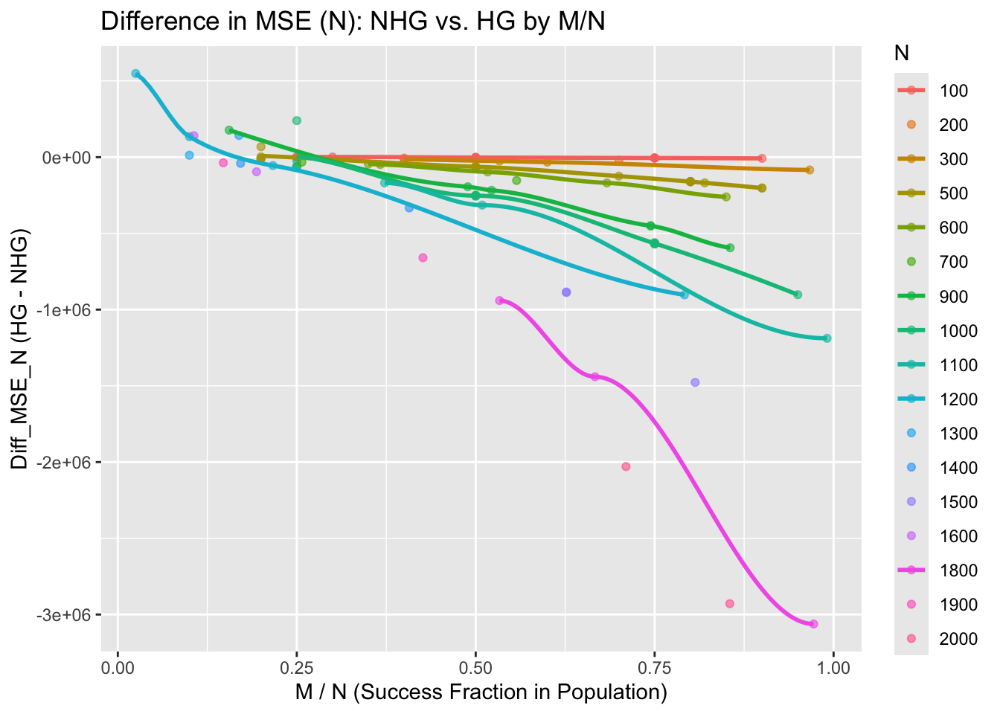
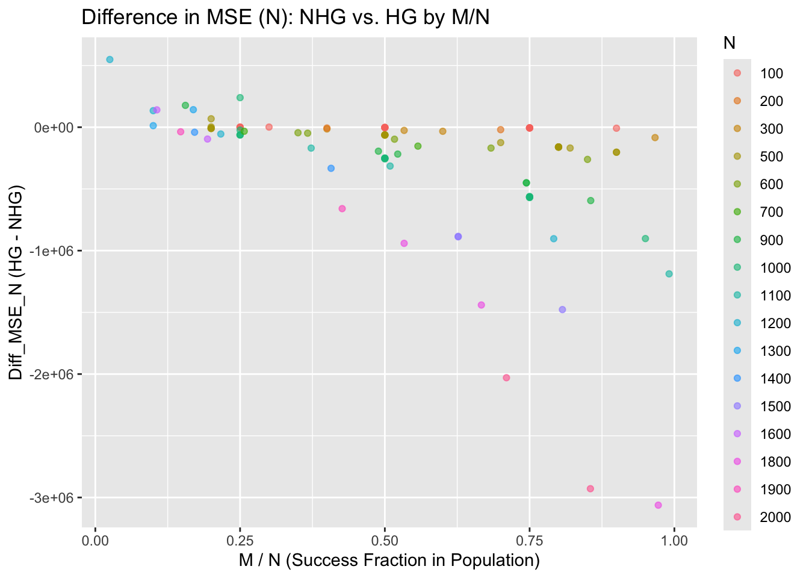
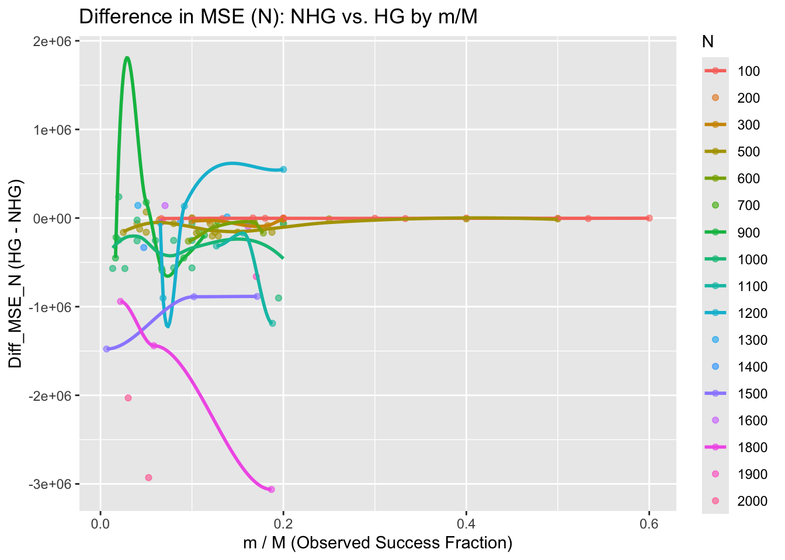
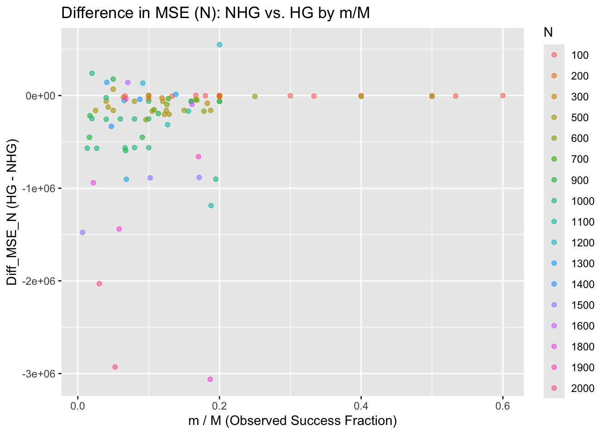
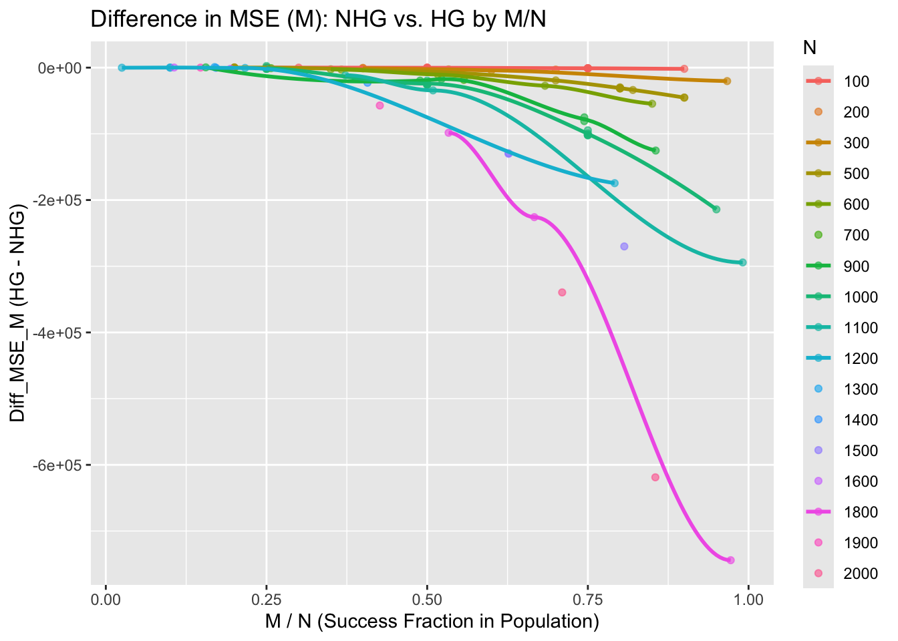
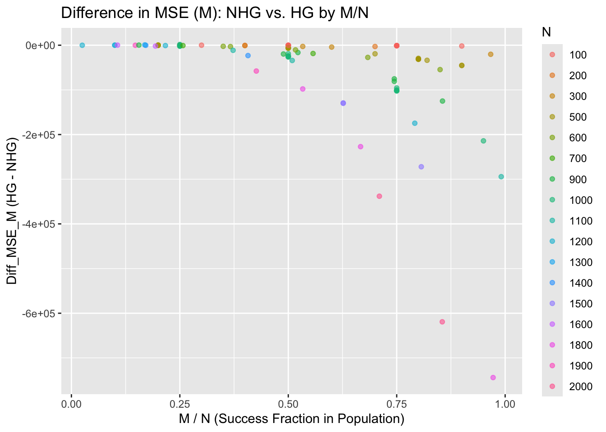
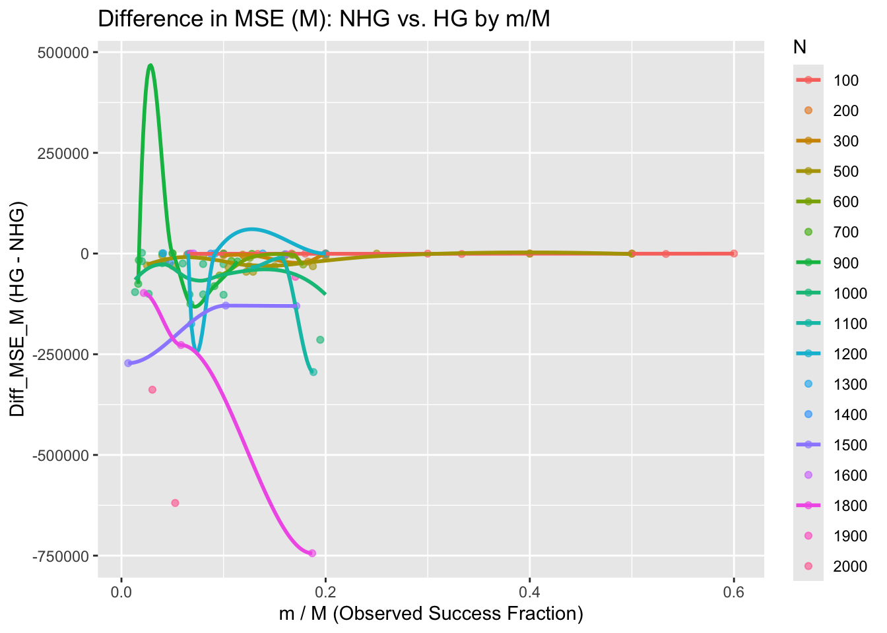
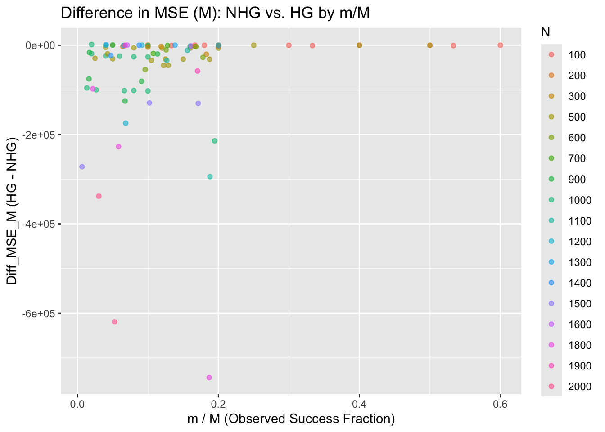

library(tidyverse)
library(extraDistr)NHG vs HG: Simulating Point Estimates
Set-Up
r_ngh <- function(num_obs, N, M, m) {
# m = # total successes (unknown) - (our notation: M)
m_pmf = M
# n = # total failures - (our notation: X = N - M)
n_pmf = N - m_pmf
# r = # fixed successes (our notation: m)
r_pmf = m
return(rnhyper(num_obs, m = m_pmf, n = n_pmf, r = r_pmf))
}Function to Simulate Point Estimates
simulate_point_estimate <- function(simulations = 1000, true_N, true_M, m) {
# Initializing results data frame
results <- data.frame(sim = 1:simulations,
est_N_HG = numeric(simulations),
est_M_HG = numeric(simulations),
est_N_NHG = numeric(simulations),
est_M_NHG = numeric(simulations),
n_NHG = numeric(simulations))
# Simulation loop
for (i in 1:simulations) {
# Sample from Negative Hypergeometric
x_NHG <- r_ngh(1, true_N, true_M, m) # Number of failures before m successes
n_NHG <- m + x_NHG # Total number of items sampled
# Sample from Hypergeometric
m_HG <- rhyper(1, true_M, true_N - true_M, n_NHG) # Number of successes observed
# Point estimates for Hypergeometric (handle cases where m_HG = 0 or NA)
if (is.na(m_HG) || m_HG == 0) {
est_N_HG <- NA
est_M_HG <- NA
} else {
est_N_HG <- (true_M * n_NHG) / m_HG
est_M_HG <- (true_N * m_HG) / n_NHG
}
# Point estimates for Negative Hypergeometric
est_N_NHG <- (true_M * n_NHG) / m
est_M_NHG <- (true_N * m) / n_NHG
# Store results
results[i, ] <- c(i, est_N_HG, est_M_HG, est_N_NHG, est_M_NHG, n_NHG)
}
# Calculate MSE for estimates
mse_N_HG <- mean((results$est_N_HG - true_N)^2, na.rm = TRUE)
mse_M_HG <- mean((results$est_M_HG - true_M)^2, na.rm = TRUE)
mse_N_NHG <- mean((results$est_N_NHG - true_N)^2, na.rm = TRUE)
mse_M_NHG <- mean((results$est_M_NHG - true_M)^2, na.rm = TRUE)
# Return results as a list
return(list(
MSE_Hypergeometric = list(N = mse_N_HG, M = mse_M_HG),
MSE_Negative_Hypergeometric = list(N = mse_N_NHG, M = mse_M_NHG)
))
}Testing Function
set.seed(814)
true_N = 100
true_M = 25
m = 5
results <- simulate_point_estimate(simulations = 1000, true_N, true_M, m)
cat("\nMSE for Hypergeometric estimates:\n")
MSE for Hypergeometric estimates:cat(sprintf("N: %.4f\n", results$MSE_Hypergeometric$N))N: 2900.9529cat(sprintf("M: %.4f\n", results$MSE_Hypergeometric$M))M: 64.9652cat("\nMSE for Negative Hypergeometric estimates:\n")
MSE for Negative Hypergeometric estimates:cat(sprintf("N: %.4f\n", results$MSE_Negative_Hypergeometric$N))N: 1644.3250cat(sprintf("M: %.4f\n", results$MSE_Negative_Hypergeometric$M))M: 50.5353Simulating Combinations of N, M, and m
set.seed(814)
parameters <- data.frame(
N = c(
rep(100, 12),
rep(500, 15),
rep(1000, 15)
),
M = c(
rep(25, 3), rep(50, 4), rep(75, 5),
rep(100, 5), rep(250, 5), rep(400, 5),
rep(250, 5), rep(500, 5), rep(750, 5)
),
m = c(
5, 10, 15, 5, 10, 15, 25, 5, 10, 15, 25, 40,
5, 10, 25, 40, 50, 10, 20, 30, 40, 50, 10, 20, 50, 60, 75,
5, 10, 25, 40, 50, 10, 20, 30, 40, 50, 10, 20, 50, 60, 75
)
)
results_df <- data.frame()
for (i in 1:nrow(parameters)) {
true_N <- parameters$N[i]
true_M <- parameters$M[i]
m <- parameters$m[i]
result <- simulate_point_estimate(simulations = 1000,
true_N = true_N,
true_M = true_M,
m = m)
results_df <- rbind(
results_df,
data.frame(
N = true_N,
M = true_M,
m = m,
MSE_HG_N = result$MSE_Hypergeometric$N,
MSE_NHG_N = result$MSE_Negative_Hypergeometric$N,
Diff_MSE_N = result$MSE_Hypergeometric$N - result$MSE_Negative_Hypergeometric$N,
MSE_HG_M = result$MSE_Hypergeometric$M,
MSE_NHG_M = result$MSE_Negative_Hypergeometric$M,
Diff_MSE_M = result$MSE_Hypergeometric$M - result$MSE_Negative_Hypergeometric$M,
M_over_N = true_M / true_N,
m_over_M = m / true_M
)
)
}set.seed(814)
num_combinations <- 50
parameters <- data.frame(
N = sample(seq(100, 2000, by = 100), num_combinations, replace = TRUE),
M = NA,
m = NA
)
parameters$M <- sapply(parameters$N, function(N) sample(seq(10, N, by = 10), 1))
parameters$m <- sapply(parameters$M, function(M) sample(seq(5, M/5, by = 1), 1))
results_df_2 <- data.frame()
for (i in 1:nrow(parameters)) {
true_N <- parameters$N[i]
true_M <- parameters$M[i]
m <- parameters$m[i]
result <- simulate_point_estimate(simulations = 1000,
true_N = true_N,
true_M = true_M,
m = m)
results_df_2 <- rbind(
results_df_2,
data.frame(
N = true_N,
M = true_M,
m = m,
MSE_HG_N = result$MSE_Hypergeometric$N,
MSE_NHG_N = result$MSE_Negative_Hypergeometric$N,
Diff_MSE_N = result$MSE_Hypergeometric$N - result$MSE_Negative_Hypergeometric$N,
MSE_HG_M = result$MSE_Hypergeometric$M,
MSE_NHG_M = result$MSE_Negative_Hypergeometric$M,
Diff_MSE_M = result$MSE_Hypergeometric$M - result$MSE_Negative_Hypergeometric$M,
M_over_N = true_M / true_N,
m_over_M = m / true_M
)
)
}write.csv(results_df, file.path("/Users/rachelroggenkemper/Documents/NegativeHypergeometric/Simulation_Comparison", "comp_1.csv"), row.names = FALSE)
write.csv(results_df_2, file.path("/Users/rachelroggenkemper/Documents/NegativeHypergeometric/Simulation_Comparison", "comp_2.csv"), row.names = FALSE)Note: Difference (MSE) = HG - NHG
Diff > 0 (positive) = HG > NHG = NHG performs better (lower MSE)
Diff < 0 (negative) = HG < NHG = HG performs better (lower MSE)
Observations and Trends
- Performance of NHG vs. HG for (N):
- NHG Performs Better (Positive Diff):
- When the difference is positive ((Diff_MSE_N > 0)), NHG has lower MSE. This is more likely when:
- (N) and (M) are large (e.g., (N > 500, M > 100)).
- The sampling fraction ((M / N)) is small, meaning the population of successes is sparse.
- (m) is small relative to (M) (e.g., (m / M < 0.5)), indicating fewer successes are observed relative to the total successes.
- When the difference is positive ((Diff_MSE_N > 0)), NHG has lower MSE. This is more likely when:
- HG Performs Better (Negative Diff):
- When the difference is negative ((Diff_MSE_N < 0)), HG has lower MSE. This happens when:
- (N) and (M) are small (e.g., (N < 500, M < 100)).
- The sampling fraction ((M / N)) is large, meaning the population of successes is denser.
- (m) is large relative to (M) (e.g., (m / M > 0.5)).
- When the difference is negative ((Diff_MSE_N < 0)), HG has lower MSE. This happens when:
- NHG Performs Better (Positive Diff):
- Performance of NHG vs. HG for (M):
- NHG Performs Better (Positive Diff):
- When the difference is positive ((Diff_MSE_M > 0)), NHG has lower MSE. This is observed when:
- (N) is large, and (M) is a small fraction of (N) (e.g., (M / N < 0.5)).
- The number of observed successes ((m)) is relatively small (e.g., (m / M < 0.5)).
- When the difference is positive ((Diff_MSE_M > 0)), NHG has lower MSE. This is observed when:
- HG Performs Better (Negative Diff):
- When the difference is negative ((Diff_MSE_M < 0)), HG has lower MSE. This occurs when:
- (m) is close to (M) (e.g., (m / M approximately = 1)).
- (M) is a large fraction of (N), and the population of successes is denser.
- When the difference is negative ((Diff_MSE_M < 0)), HG has lower MSE. This occurs when:
- NHG Performs Better (Positive Diff):
- Impact of the Ratio (M / N):
- NHG outperforms HG (positive difference) as (M / N) decreases, especially when (M) is a small proportion of the population size (N).
- HG performs better (negative difference) as (M / N) increases, meaning the population contains a higher density of successes.
- Impact of the Ratio (m / M):
- NHG performs better (positive difference) when (m / M) is small, as the Negative Hypergeometric distribution is specifically designed for cases where the number of successes ((m)) is fixed.
- HG performs better (negative difference) as (m / M) approaches 1, benefiting from its fixed sample size ((n)).
Summary Interpretation
- NHG excels in situations with:
- Large populations ((N)), sparse successes ((M / N) small), and smaller observed successes ((m / M) small).
- HG excels when:
- The population has a higher density of successes ((M / N) large), and the observed successes ((m / M)) are closer to the total successes.
Visualizing Results
combined_results <- bind_rows(results_df, results_df_2)# Plot 1: Diff_MSE_N vs. M/N
ggplot(combined_results, aes(x = M_over_N, y = Diff_MSE_N, color = as.factor(N))) +
geom_point(alpha = 0.6) +
geom_smooth(method = "loess", se = FALSE) +
labs(
title = "Difference in MSE (N): NHG vs. HG by M/N",
x = "M / N (Success Fraction in Population)",
y = "Diff_MSE_N (HG - NHG)",
color = "N"
) 
ggplot(combined_results, aes(x = M_over_N, y = Diff_MSE_N, color = as.factor(N))) +
geom_point(alpha = 0.6) +
labs(
title = "Difference in MSE (N): NHG vs. HG by M/N",
x = "M / N (Success Fraction in Population)",
y = "Diff_MSE_N (HG - NHG)",
color = "N"
) 
# Plot 2: Diff_MSE_N vs. m/M
ggplot(combined_results, aes(x = m_over_M, y = Diff_MSE_N, color = as.factor(N))) +
geom_point(alpha = 0.6) +
geom_smooth(method = "loess", se = FALSE) +
labs(
title = "Difference in MSE (N): NHG vs. HG by m/M",
x = "m / M (Observed Success Fraction)",
y = "Diff_MSE_N (HG - NHG)",
color = "N"
) 
ggplot(combined_results, aes(x = m_over_M, y = Diff_MSE_N, color = as.factor(N))) +
geom_point(alpha = 0.6) +
labs(
title = "Difference in MSE (N): NHG vs. HG by m/M",
x = "m / M (Observed Success Fraction)",
y = "Diff_MSE_N (HG - NHG)",
color = "N"
) 
# Plot 3: Diff_MSE_M vs. M/N
ggplot(combined_results, aes(x = M_over_N, y = Diff_MSE_M, color = as.factor(N))) +
geom_point(alpha = 0.6) +
geom_smooth(method = "loess", se = FALSE) +
labs(
title = "Difference in MSE (M): NHG vs. HG by M/N",
x = "M / N (Success Fraction in Population)",
y = "Diff_MSE_M (HG - NHG)",
color = "N"
)
ggplot(combined_results, aes(x = M_over_N, y = Diff_MSE_M, color = as.factor(N))) +
geom_point(alpha = 0.6) +
labs(
title = "Difference in MSE (M): NHG vs. HG by M/N",
x = "M / N (Success Fraction in Population)",
y = "Diff_MSE_M (HG - NHG)",
color = "N"
)
# Plot 4: Diff_MSE_M vs. m/M
ggplot(combined_results, aes(x = m_over_M, y = Diff_MSE_M, color = as.factor(N))) +
geom_point(alpha = 0.6) +
geom_smooth(method = "loess", se = FALSE) +
labs(
title = "Difference in MSE (M): NHG vs. HG by m/M",
x = "m / M (Observed Success Fraction)",
y = "Diff_MSE_M (HG - NHG)",
color = "N"
) 
ggplot(combined_results, aes(x = m_over_M, y = Diff_MSE_M, color = as.factor(N))) +
geom_point(alpha = 0.6) +
labs(
title = "Difference in MSE (M): NHG vs. HG by m/M",
x = "m / M (Observed Success Fraction)",
y = "Diff_MSE_M (HG - NHG)",
color = "N"
) 